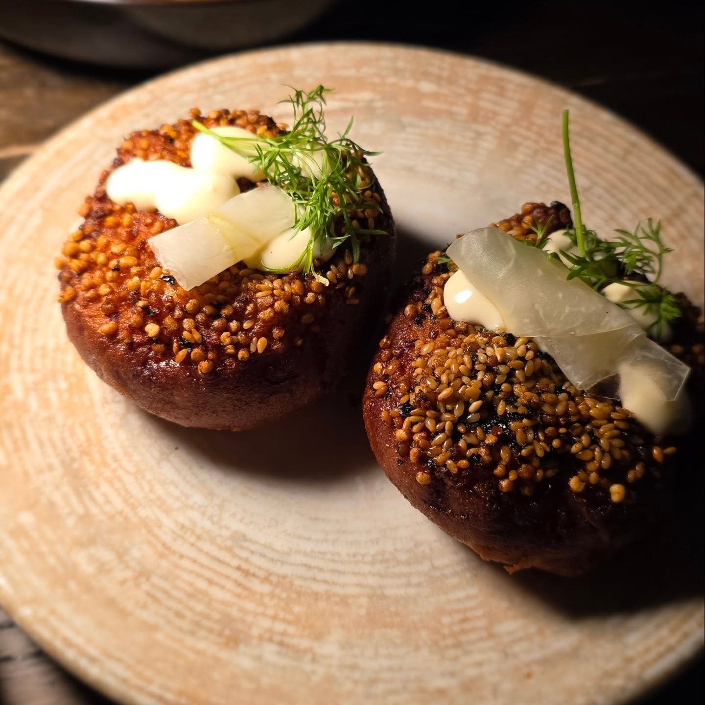

Review 63 parsed reviews. Every edit is auto-saved in your browser (localStorage). When you're done, click Export changes to download a JSON file: send that back to me and I'll apply it to the live site. Nothing here touches the live archive yet.
63 reviews54 need attention15 cuisine unresolved35 suburb unresolved7 no ratings22 stars-only (need conversion)16 contain video6 contain HEIC
ShowReviewedRatingsCuisineSuburb63 visible
Reviewed 0/63
Edited 0

2026-04-09 · review #1
edited
Slug: 2026-04-09_auntyonwandoo
Five scores json-native
Show full source caption (read-only)
Growing up with Sri Lankan family, "aunty" means one thing: unsolicited opinions delivered with a smile. Weight gain. Marriage. Babies. Timeline. This Aunty had none of that energy. Just good food, a full room on a Tuesday, and friendly service.
Located on Wandoo Street, Fortitude Valley, @auntyonwandoo is moody, warm, and a cool vibe. A full house midweek in Brisbane is always a good sign.
We went the banquet. Prawn toast arrived first and had actual prawn in it, which already put it ahead of most.
Calamari was decent but a little oily, and back-to-back fried starters tested the palate. The cauliflower spring roll with mayo and miso was tasty, same caveat.
Then the beef tartare arrived and reset everything. Excellent. Clean and precise.
The pressed wagyu skewer, added to the menu, was something else. Light soy glaze, mustard, eight hours of prep. You could taste the time in it.
The night belonged to the crab noodles. Creamy, deeply comforting, built with real intention. The chilli oils on the side deserve their own mention.
Dessert was a crunch bar: cashew against chocolate. Solid.
We left with a takeaway bag. Good value for what this room is delivering.
The crab noodles. The wagyu skewer. I'll be thinking about both for a while.
Photos (10) — pick hero via the 'hero' tick, tweak any caption inline
@monaldining is located on Skyring Terrace that looks, from the outside, like a place you could easily walk past. You shouldn't.
The kitchen is Yogesh Budhathoki's. A Nepalese chef with serious Brisbane pedigree, having come through Honto, Yoko and Greca. And that background matters, because it shows up in the food in ways that are genuinely interesting.
We started with the Hokkaido scallops, apple, pickled chilli and cod's roe. A nice kick to open with. The acidity and heat was fantastic. Then the yellowfin tuna tartare on fried potato. Very good.
The wagyu tartare was a step up. Exceptional, actually. But the real talking point was the bread served alongside it. Do not ignore the bread.
Then the pork dumplings with hemp-seed sauce and chilli oil arrived, and something shifted. I know how this sounds, but hear me out: they tasted like naan and butter chicken. Not literally, but in that deep, comforting, familiar way that good food sometimes reaches back into your memory and pulls something out. The Nepalese influence stepped up a notch here, and it was genuinely arresting. O.M.G. is not a phrase I deploy lightly.
The duck breast with smoked onion soubise and orange teriyaki was a beautifully put-together dish. The orange and smoke combination was excellent.
Now. The grilled cabbage. It is listed as a side. It should not be listed as a side. It was one of the highlights of the entire meal, and if you skip it because it sounds unremarkable, that is your loss entirely. The potato mash was also exceptional.
Inside, it's compact and considered. It feels and is a beautiful neighbourhood restaurant. Service was warm and attentive.
Photos (7) — pick hero via the 'hero' tick, tweak any caption inline
West End has no shortage of good food, but sometimes you just want something simple, comforting, and full of flavour. That is exactly where @lilongrestaurant fits in.
This is authentic Chinese street food done properly. Nothing fancy. Just honest dishes built on traditional techniques and epic flavours. Dumplings, noodles, snacks to share, and plates that belong around a busy table.
It is the kind of place that works for a lazy weekend bite or a quick weeknight feed when cooking feels like too much effort. And the takeaway game is strong too.
We started with the pan fried pork dumplings. Solid. Crisp on the bottom, juicy inside, exactly what you hope for.
Then came the wok fried water spinach. Light, garlicky, and the one dish that briefly convinced me I was making healthy life choices. The prawns and chives spring rolls quickly balanced that illusion. Golden, crunchy, and very happy to undo the health narrative.
Fried rice followed. Pure comfort. The kind of bowl that quietly does its job and disappears before you realise.
The standout of the night was the barramundi in soy and chilli sauce. Fantastic. Silky fish and a punchy sauce.
Li Long is not trying to impress with theatrics. It simply delivers the kind of food that satisfies. Sometimes that is exactly what you want.
Photos (5) — pick hero via the 'hero' tick, tweak any caption inline
I was lucky to score a table at the opening night in West End. A new neo-Nordic restaurant playing with local Queensland produce. What I experienced was thoughtful, grounded cooking from a team that cares about their craft.
The space hums with quiet passion. You can tell they know this industry is tough. Long hours. Tight margins. Big expectations. And yet, they are here for the love of it.
SWIPE THROUGH FOR THE FULL REVIEW
This place has heart. You can feel it in the food and in the team. I genuinely want to support restaurants like this. If you care about produce, craft and passion on the plate, go.
Photos (17) — pick hero via the 'hero' tick, tweak any caption inline
@bosco_winegrill sits in what feels like a dark industrial warehouse, almost a shed, and somehow that makes the whole experience better. Moody. Honest. Fire at the centre of it all. You can smell this place from a couple of blocks away. You walk in and immediately know this place takes its craft seriously.
It’s a wood-fired restaurant and they lean into it properly. Smoke, char, depth. Service was excellent throughout, warm but not overbearing. And the wine list deserves a nod too, pretty solid.
We started with Bosco’s croquette of suckling pig and chicken. Crisp shell, rich and savoury inside. The flatbread gilda with olive, pepper and Olasagasti anchovy was punchy and salty in the best way. Simple ingredients, big flavour. Don’t skip it.
The duck with sweet spice, bone stock rice, asparagus and rhubarb glaze was beautifully balanced. The glaze cut through the richness, the rice soaked up everything around it. Proper comfort, but refined.
Then the ember-hung whole Bannockburn chicken with vadouvan jus. Smoky skin, juicy flesh, that gently spiced jus tying it all together. You could taste the fire. You could taste the care.
Spring potato torta and broccolini on the side did their job well. The potatoes especially, crisp edges, soft centre, exactly what you want next to wood-fired protein.
You can tell they are proud of what they do here.
Photos (7) — pick hero via the 'hero' tick, tweak any caption inline
Another polished hit from @davidsflynn with @chef_ollie_ in charge. Brisbane is quietly building a serious dining scene, and this is part of that story.
@marlowebne is a lovely space. Quirky rooms across different levels, each with its own little mood. The fit-out is thoughtful and refined, but for me it was the china that won. Staff are warm, relaxed and genuinely knowledgeable about the menu, which always makes the night flow better.
Now, the food.
We started with the crudo. Solid. Clean flavours, fresh and well balanced.
The spiced gingerbread waffle with chicken pâté was great. Sweet spice meeting rich savoury, playful without being gimmicky.
Curried crab brioche was fantastic. Soft, buttery bread giving way to fragrant, gently spiced crab. Comfort with finesse.
Then the duck pie arrived. O.M.G. Absolutely phenomenal. Deep, rich, savoury layers wrapped in golden pastry. Best dish of the night and honestly, I would come back just for this.
Wood fired scallops were great, beautifully cooked with that subtle smokiness doing the heavy lifting.
The spiced pork loin was very nice. Balanced, well executed, no complaints.
And yes, the coral trout wellington. We came for the hype. It lived up to it. Fantastic. Delicate fish encased in crisp pastry, elegant and impressive. But if I am being completely honest, the duck pie still stole my heart.
A beautiful room, serious cooking, and one dish I am still thinking about.
Photos (13) — pick hero via the 'hero' tick, tweak any caption inline
@darkshepherd_bne sits inside @thestarbrisbane and immediately signals that this is not your loud, blue-and-white, plate-smashing take on Greek food. The room is dark, moody and polished. A Mediterranean restaurant that has stepped away from what you usually expect and landed somewhere far more refined.
We started with the halloumi chips, finished with honey and thyme. Sweet-leaning and indulgent. Closely followed by the saganaki. I am not usually drawn to sweeter starters, but I did not complain. The balance was well judged and the quality of the produce carried it. We balanced that out with the woodfired scallops as recommended by the team - 0 regrets.
The woodfired Brussels sprouts were a pleasant shift. Smoky, earthy, coated in yoghurt, orange and garlic. This was a simple dish, but very tasty. The arnaki rice followed, deeply savoury from lamb stock.
The wagyu souvlaki was where the menu really started to flex. MB7+ rump cap, beautifully cooked, full of flavour. The Greek spices were present without overpowering, but the real standout was the spicy dip on the side. Bold, punchy, and frankly excellent. It lifted the dish from very good to memorable.
Then came the toothfish. This was epic. Perfectly cooked, rich and clean, with a lemony sauce that did exactly what it needed to do. Bright, sharp and complemented the fish rather than mask it. Easily the dish I would come back for.
Service deserves a mention. Professional, relaxed, knowledgeable and genuinely fun. Exactly what I have come to expect from a restaurant backed by @michael_tassis and @tassis.group.
Dark Shepherd feels deliberate in what it is trying to be. Mediterranean at heart, but modern and confident enough to slightly be removed from tradition. It works.
Photos (8) — pick hero via the 'hero' tick, tweak any caption inline
@ra_restaurant_and_bar sits right by the beach, which already puts you in a good mood. Add Sri Lankan–inspired cocktails, ocean air, and a dining room layered with Sri Lankan art and colour, and you are exactly where you want to be. Relaxed but intentional. Proud without being performative.
Service is one of Ra’s quiet strengths. Warm, friendly, and genuinely personal. You are guided, not sold to. It feels like hospitality rooted in culture rather than choreography.
The food journey started with… a drink. The curry leaf mojito is clever and refreshing. A proper opener.
Snacks come next. Jackfruit cutlets that are crisp on the outside and soft within, deeply spiced and comforting. Vada that do exactly what vada should do, crunchy, savoury, and dangerously snackable.
Then the mains arrive, and this is where Ra really flexes.
The spicy Jaffna fish curry is bold and aromatic. The black pork curry kottu is rich, indulgent, and deeply satisfying. Pure comfort.
Sides matter here. Pol sambal brings freshness and bite. Tempered potatoes are simple but perfectly judged. Roti is essential, non-negotiable, and used to mop up everything left behind.
Dessert technically did not happen at the table. Too full for wattalappan, but takeaway felt non-optional. It barely survived the trip home.
Ra continues to be one of the best expressions of Sri Lankan food in Queensland. Confident, generous, and rooted in culture.
Photos (6) — pick hero via the 'hero' tick, tweak any caption inline
123456
#SasenkaLovesFood#RaNoosa#NoosaEats#SriLankanFood
2026-02-02 · review #9
suburb?cuisine?
edited
Slug: 2026-02-02_supernormal-brisbane
Five scores caption-parsed
Show full source caption (read-only)
Back at @supernormal_brisbane, this time without the opening buzz and with a bit more reality baked in.
The night started rough. Service was very slow. Close to an hour waiting, and not just our table. It felt like something had gone sideways in the kitchen and the room stalled with it. The response took a while, but when it came it was handled properly. A sincere apology and a cocktail on the house. Appreciated. These things happen, and how they’re handled matters.
Once the food landed, things turned around.
The kimchi bread still hits the mark. Comforting, savoury, hard to stop picking at.
The lamb pastry was a standout. Rich, flaky, and properly moreish.
Chicken and prawn dumplings were excellent, delicate skins and good balance.
The lobster roll remains solid and dependable, no surprises, just well done.
Mushroom rice was fantastic. Deep, savoury, and quietly one of the best things on the table.
The lamb shoulder this time leaned a bit too rich for me, though that’s often the nature of the dish rather than a flaw.
This visit felt like Supernormal finding its groove in Brisbane. Not perfect, but more confident in the food than the early days. When the kitchen is firing and the room is moving, it still delivers.
Photos (8) — pick hero via the 'hero' tick, tweak any caption inline
I’ve been a frequent visitor to @honto.restaurant and I genuinely never leave disappointed. The dark, moody room still works for me. I am technically still in my thirties and can read the menu without a phone torch. Just.
From a video or photo perspective though… absolutely horrendous lighting.
The upside is everything else.
Service is warm, confident, and genuinely helpful. The team knows the menu inside out and is not shy about steering you towards dishes that make sense together. Always appreciated.
The food journey was strong from the start.
The tuna tostada had a proper kick, with the crunch of the tostada playing beautifully against the fish.
The tuna tataki was clean and well executed. Simple, tasty, and satisfying.
Yellowfin tuna followed, fresh and bright. No fuss, just good fish treated well.
Then came the pork sando. I saw it land on another table, changed my plans immediately, and ordered it. Zero regrets. Comfort food done right.
Honto continues to do clever things with potatoes. The potato mochi was a standout. I am still mourning the loss of the Million Layer Potatoes, but this was genuinely tasty and unique, with that soft, bouncy mochi-like texture.
Wagyu brisket was beautiful.
Eggplant was my favourite on the table.
Mushrooms were lovely.
Rice on the side, as it should be.
Bad lighting. Great food. Consistently so.
Photos (9) — pick hero via the 'hero' tick, tweak any caption inline
This was my third visit to @nug.generalstore, and it keeps reinforcing why I like places like this so much.
Small restaurant. Few tables. Husband in the kitchen, wife out front. The kind of set-up people love to romanticise, except here it actually delivers. You can feel the care in how everything is done, and more importantly, you can taste it. There is joy, pride, and a lot of hard work coming through every plate.
The Italian Sausage and Nduja Ragu pasta came first. Deeply comforting, generous, and properly seasoned. The Queensland Spanner Crab pasta followed, lighter but still full of flavour. Clean, balanced, and cooked with restraint. It tasted fresh and honest, letting the seafood do the talking.
Then the Slow Braised Black Angus Beef Cheek arrived, my highlight. Rich, slow-cooked, and full of soul. The kind of dish that reminds you why patience in the kitchen always wins.
Service was warm and genuine as always. You are looked after like a guest, not a customer. No rushing, no theatrics, just people who care about what they are putting on the table.
This place might be small, but it is run with care and intention, and that comes through in the food. It is the sort of food you come back for, which explains why I am already on visit number three.
Photos (5) — pick hero via the 'hero' tick, tweak any caption inline
Been here a few times, but this was my first time since @fatcow_onjamesst introduced Kobe beef, and yes, I was quietly excited walking in.
Fatcow, another awesome restaurant by @michael_tassis, sits right where it should on James Street, polished but relaxed. The room feels grown-up. Low-lit, stylish.
The service is one of their strongest plays. From wine to steak, they know exactly what they are talking about, and more importantly, they know how to read the table. You feel looked after without being hovered over. Special shout out to Melissa and @caiorossettoaus for exceptional and genuinely fun service, she made the night.
The starters and sides were solid across the board. Nothing trying too hard, just food that made sense and complements the main act (steak!). We started with oysters that were fresh and clean, an easy way to kick things off. The wagyu tortellini was rich and comforting. Highly recommend you ordering this one.
Then came the Kobe beef, which was the whole point of the visit and absolutely delivered. It was rich, deeply marbled, and indulgent without tipping into excess. Soft, buttery, and full of flavour. A very good beef treated with respect. We are genuinely lucky to have access to this calibre of beef in Brisbane, especially when true Kobe is so tightly controlled and rarely seen outside Japan. This is one of those ingredients where the pedigree actually matters, and you can taste it in every bite.
I have not had a bad steak here yet, and that is something I have come to associate with Fatcow. Consistency, done properly.
Photos (7) — pick hero via the 'hero' tick, tweak any caption inline
Good food, shared with beautiful people, and amazing memories. Hard to pick favourites, but these are a few of the dishes that stuck with me this year.
Wagyu steak at @exhibitionrestaurant in Brisbane, Australia
Fish soup at a Hawker Centre in Singapore
Grilled fish at @ra_restaurant_and_bar in Noosa, Australia
Tacos at @birriaboy.au in Brisbane, Australia
Croquette at @bar_rosa_southbrisbane in Brisbane, Australia
Quail at @willow.restaurant in Singapore
Kiribath with Thai Red Curry at @the.stache_brunch in Sri Lanka
Prawn curry at @ministryofcrab.australia in Melbourne, Australia
Singapore Chili Crab at Harvest Seafood Singapore
Kibbeling at the Market in Delft, The Netherlands
Porterhouse steak at @waltersbrisbane in Brisbane, Australia
Moussaka at @mariposa.restaurant in Rhodes, Greece
Gnocchi at @scopri_carlton in Melbourne, Australia
Turkish pide and meats at @mrcookrestaurantmarina in Marmaris, Türkiye
Ravioli at @rosmarino.brisbane in Brisbane, Australia
The snacks at @joyrestaurant in Brisbane, Australia
Photos (17) — pick hero via the 'hero' tick, tweak any caption inline
I’ve been to @agnes.restaurant by @anyday.hospitality a few times over the last few years and it has never missed. Named Gourmet Traveller Restaurant of the Year in 2023, expectations were high again, and once more, it delivered.
The setting is cool. Dark, cosy, big shared tables that feel communal. And then there’s that smell. Wood fire everywhere. No electricity. No gas. Just open flame, wood and smoke. You feel it before you taste it.
We kicked off with snacks, which often say a lot about a kitchen. Agnes starts strong.
The sourdough crumpet with yellowfin tuna, crème fraîche and caviar was beautiful. Clean, rich, very satisfying. The grilled pork and prawn betel leaf with prawn emulsion and arabushi was probably my favourite of the snacks. Punchy, savoury, and properly moreish.
Panisse with black garlic, olive, rosemary and comté was excellent. You know me, anything involving black garlic already has my attention. The smoked ox tongue with malted miso hollandaise and soured white onion wasn’t for me. The sauce just didn’t land on my palate, but I appreciated the intent.
The eggplant with baby ganoush was lovely. Comforting, smoky, and exactly the kind of dip I gravitate towards wherever I am.
From there, things really opened up.
The charred hispi cabbage with calamansi vinegar, almond and tarragon was outstanding. Bright acidity, nuttiness, herbs working together very well. The wood roasted duck with muscat grapes, burnt honey and bitter leaves was a highlight. Deep flavour and beautifully balanced.
The 6+ wagyu sirloin with sweet garlic and pickled walnut was unreal. Rich and perfectly cooked. The Roast King Edward potatoes with onion cream and sesame praline was… look… Sasenka loves carbs.
Service was polished but relaxed. Everything moved at a good pace, and the team clearly knew the food and the fire.
Agnes continues to do what it does best. A place I keep coming back to, and will happily keep doing so.
Photos (9) — pick hero via the 'hero' tick, tweak any caption inline
@capicherestaurant is perched right on the beach, and even the short stroll from the car park gives you that instant holiday feeling. Inside, it is cosy and spacious at the same time. I landed a prime seat by the floor to ceiling windows, ordered a beautiful red and settled in.
I came in telling myself it would be a quick meal. Then the foodie in me took over and the plan went out the window. First thing to know, do not skip the bread with garlic and herb butter. That butter might be the best I have had in a long time. The bread was fluffy, warm and comforting, and when they came to clear the plate I asked them to leave the butter for my mains. No shame.
The tuna carpaccio was solid, clean and bright with a welcome kick of red chilli. The asparagus was simple and done well. Then the pasta arrived and stole the show. It was excellent, one of the best I have had in a while. The flavours were balanced, generous and exactly what you hope for when ordering pasta by the sea.
The staff kept things relaxed. Casual, warm, and clearly confident in what they were doing. It added to the whole coastal charm of the place.
I will happily come back here. Capiche feels like one of those northern NSW finds that sneaks up on you and stays in your mind long after you leave.
Photos (7) — pick hero via the 'hero' tick, tweak any caption inline
@stationbykotuwa in Singapore feels like stepping straight into Colombo, only with a little more polish and a lot more intention. The moment you walk in, there is this quiet wave of pride that hits you. The furniture, the design details, the staff who know their stuff inside out, it all feels familiar in the best way. Like being welcomed home, but into the version of home you wish you grew up with.
The food leans into tradition, then nudges it forward. Cashew nuts that should be a simple snack come out tasting unreal, rich and lightly spiced, almost showing off. The banana blossom cutlet is another beauty, crisp outside and soft inside, carrying that unmistakable Lankan soul. The Mutton roll itself was good, but the sauce was the real star, full of depth and heat.
Their beetroot is fresh and tangy, lifted with peppers so it does not feel heavy. The kingfish lands nicely too, clean and bright. Then comes the dish that made me do a happy dance, the chicken liver with egg roti. Soft, silky, and punched up by fried curry leaves that tie the whole thing together. A proper standout.
Moju takes a slight turn from the version I grew up with, but it works. The heat is there, sharp enough to make you smile. Then the beef cheek arrives and steals the show. Tender, deep with spice, and easily my favourite plate of the night.
Dessert was classic comfort. Chocolate biscuit pudding that took me right back, finished with a pour of arrack and a Ceylon tea because some endings are meant to feel familiar.
Photos (12) — pick hero via the 'hero' tick, tweak any caption inline
@lemakkitchenandbar on a Sunday full of running errands turned out to be the best decision I made all day. First time checking out their Woolloongabba spot after only knowing them from their East Brisbane days. The new location has that local Kuala Lumpur feel, the kind where you wander in off a busy street and get swept up by LED lights, colour, and a warm hello before you even sit down.
The food leans into nostalgia in the best way. Proper soulful Malaysian plates that aim to transport you, and honestly, they do. Nothing fancy, nothing trying too hard, just confident flavours that land where they should.
We went for a little carb-heavy spread. The Nasi Goreng with chicken curry was excellent. The Nasi Lemak was a reminder that a good nasi lemak will always have my heart. And the Roti Canai, warm and flaky, dipped into that fabulous curry, was comfort on a plate. Ice Kopi and Ribena on the side because Brisbane was doing its best to melt us.
A simple, soulful lunch that hit every note I needed that day.
Photos (4) — pick hero via the 'hero' tick, tweak any caption inline
@golden.avenue.restaurant feels like you are waking into a lush Middle Eastern oasis tucked right into the heart of Brisbane. Chefs @benwilliamsonisgood and @a.wolfers have created something genuinely cool here, drawing on Middle Eastern flavours then nudging them with Australian touches that feel playful, grounded and full of soul.
The dishes respect their origins and the classics, but they bend the rules just enough to make things interesting. There is a sense of care in how they elevate familiar flavours without ever taking it too far.
Some of my favourites:
The lahoh flatbread is the thing you pull apart slowly, warm and pillowy, and the Muhammarra is my pick of the dips, rich with roasted pepper and that gentle nuttiness that lingers. The Batata harra is fantastic. If you know me, you know I love myself some fried carbs. The sauce with it is a winner too. The wagyu bavette looks like a simple dish on the table, but the flavour is on point. I have had it twice now, and both times it was fantastic.
Service was warm and easy, the staff adding a bit of fun to the night without getting in the way. The whole place has a casual charm that makes you relax into the food and the space.
Golden Avenue feels like the kind of spot you come back to with friends who like to eat with enthusiasm. This blend of Middle Eastern soul and Australian character works beautifully. Another great restaurant by @anyday.hospitality.
Photos (10) — pick hero via the 'hero' tick, tweak any caption inline
@laylabrisbane sits in a lovely corner of West End. The restaurant is modern but nice and cosy at the same time. The room feels considered and decorated with intention rather than trend.
Things took a little while to get started which is forgivable mid-week. Once the orders went through, the evening found its pace and the energy felt warmer. As often the case, the smaller dishes is where the joy sits. They are playful, full of texture, and give you a good sense of how the kitchen thinks.
The Moreton Bay bug pani puri came first, bright and aromatic with harissa and that orange blossom and chermoula water giving it a little lift. The Turkish beef dumplings were good, dressed in mushroom XO, sujuk, yoghurt and spiced burnt butter.
The mains were not terrible, just not what stayed with me. The Habibbi butter chicken had flavours that felt slightly apart, as though it needed more time to settle together. Presentation across the board was excellent though. You can see the pride in their interpretation of Middle Eastern flavours. Some plates worked for me, some did not, but there is nothing wrong with taking a swing. It is worth trying for yourself to see where you land.
Service was warm once things got rolling and the night felt easy enough. Layla has charm, especially in the smaller plates, and the space itself is a winner.
Photos (5) — pick hero via the 'hero' tick, tweak any caption inline
@willow.restaurant by Chef @nictkc was my choice for my wife's birthday this year. A contemporary Asian dining room in Singapore carrying one Michelin star. The space is both elegant and modern with a lot of soul. Chef Terence Sng was on duty and the night started with a Dom 2015. Only the best for my Queen.
I watched firsthand how the team cooks with simplicity and trust in the produce, leaning on the consistency of Japanese ingredients and letting their natural flavour lead. The menu itself moves through beautiful ingredients using techniques drawn from across cultures.
As a proper food geek, I like to taste, think, and talk through what I am experiencing. @ter_enceeee was more than happy to listen and explain the intention behind each dish, which made the night stand out from so many others. You need to be a geek to tolerate that, and he met me there the whole way through.
Kat, the restaurant manager, accommodated every request from a week before we even arrived, and continued to do so on the night. Santhosh, the sommelier, paired sake and wine with such precise detail, explaining exactly why each choice worked and letting me taste the difference myself.
The mastery here is not just in the kitchen. It runs through the entire dining experience.
*FULL REVIEW IN THE PHOTO CAROUSEL*
Photos (16) — pick hero via the 'hero' tick, tweak any caption inline
Some restaurants you find, others find you. @mariposa.restaurant in Rhodes, Greece is one of those that feels like a story waiting to be told. The owner shared how it all began as a hobby, cooking for friends. Then came the “you should open a restaurant” chorus, and eventually, he and his wife did. She’s the chef, and she’s fearless. One morning, she decided she wanted to do things differently. “No potatoes in the moussaka,” she said. A bold stance in Greece, but now the locals line up for her creativity.
Dinner here is a gentle rebellion wrapped in charm. The seabass potato salad was bright and lemony. The seafood orzo was full of life, with grilled prawns and mussels stealing the show. But the mango chutney calamari, that was the star. Sweet, sharp, and unexpectedly perfect.
The moussaka was hands down the best I’ve ever had. The eggplant ravioli replacing the potato deserves its own fan club. And dessert was pistachio heaven; baklava, tiramisu, and ice cream for all those with a sweet tooth.
Dining at Mariposa feels like being let in on a secret. A place where tradition is respected but never allowed to get too comfortable. The sound of the ocean in the background doesn’t hurt either.
Photos (10) — pick hero via the 'hero' tick, tweak any caption inline
Took the folks to dinner at @decentraledelft (The Netherlands) and let me tell you, this one is good. Set inside the Koornbeurs House, a 17th-century iconic building right in the heart of Delft’s old city, it’s the kind of space that feels steeped in history yet completely at ease with its modern, creative energy.
The staff were brilliant; knowledgeable about both food and wine, and generous with their time. You could tell they genuinely wanted you to understand what you were eating and why it worked.
The dishes were inventive without feeling gimmicky. There’s a clear respect for flavour and technique here. Some combinations hit the mark perfectly; others stretched a little further than my palate preferred, but even then, I respected the ambition.
The tuna karate was an early win: yellow tomatoes, pickled elements, and a papaya sauce that tied everything together. Fresh, vibrant, and textured in all the right ways. The squid course followed, dressed in inky drama with a touch of gochujang heat and a delicate Chinese seafood broth; complex but still clean.
The yellow beet with blu blanc, corn, and red cabbage was earthy and satisfying, a pause before things got indulgent again with the lobster raviolo we cheekily added to the menu. No regrets there. The yuzu and fennel underneath gave it a lift, while a gentle foam kept it elegant rather than rich.
Then came the lamb, paired with tangerine and tomato jam, served alongside asparagus. It was clever, fragrant, and perfectly cooked. Finished with a barbecued peach and rice crumble, the dessert was light and tropical, the lemongrass giving it that subtle Dutch-Asian twist that De Centrale pulls off so well.
Photos (8) — pick hero via the 'hero' tick, tweak any caption inline
@clarence.restaurant has settled into its new Fish Lane digs nicely. Fairly casual yet confident. I dropped in for a quick dinner with a couple of friends. No tasting menu or long affair, just a few plates and good chat.
Let’s start with what might just be Brisbane’s best bar snack right now: the so-called ‘Singapore’ mud crab on a fried mantou. Tiny but absolutely bursting with flavour. That glossy, spicy-sweet sauce clings to the soft bun like it was made for it. If you go, don’t skip this. In fact, I’d happily come back for these alone.
My grass-fed scotch steak was shared unfortunately, with a friend who prefers it medium. Even then, the flavour held up beautifully. Rich, juicy, and properly seasoned. The duck fat potatoes alongside were golden perfection. Together, it was a winning combination.
Look I am not much of a dessert kinda guy and after that crab, nothing else stood a chance. So I did the only logical thing. I ordered another round of the mini crab buns. Zero regrets.
Photos (5) — pick hero via the 'hero' tick, tweak any caption inline
When you’re in Asia and stumble into a little spot without an Instagram account, that’s usually your first sign you’re in for something real. Harvest Seafood in Singapore is exactly that. A couple of years ago, I ate somewhere nearby and told myself I’d come back, not just for the food, but for the views and the atmosphere.
We sat right on the Singapore River with the kind of view you only get in postcards: Marina Bay Sands glowing in the distance, the Fullerton Hotel to one side, and the Asian Civilisations Museum across the water. Humid night air, wine in hand, boats drifting past. It was one of those perfectly chaotic Singapore scenes. This is why I love travelling.
I came here for one thing and one thing only: Singapore Chilli Crab. And not just any crab, I went all in with a Sri Lankan mud crab cooked in that iconic, messy, fiery sauce that’s equal parts Singaporean and Malaysian pride. Of course, I needed mantou buns to mop up the sauce (arguably the best part) and threw in some black pepper prawns and greens for balance; or at least to convince myself I had balance after three cocktails and a round of fried snacks an hour earlier.
The space is small but lively. The staff were on point: quick with orders, refills without asking, and somehow keeping pace with the madness. The food arrived steaming, fragrant, and unapologetically bold. They respected the traditional flavours while adjusting the spice just how I like it; extra hot. The crab was meaty and rich, the sauce deep and layered, and the black pepper prawns hit with that sharp, savoury punch you chase long after the meal’s over. Even the presentation on point; that glossy red crab sitting proud, ready for the carnage.
If this was my last meal on earth, I’d die very, very happy.
Photos (9) — pick hero via the 'hero' tick, tweak any caption inline
I sat at the sushi counter at the @sushi___room and got the best seat in the house, right in front of the chefs at work. There’s something special about watching that level of focus up close. Every movement is clean and deliberate with almost no wasted motion. The space matches that energy perfectly: sleek, minimalist, and modern, but not at all cold. It’s the kind of place where you’ll want to dress up a bit, though the warmth of the staff quickly puts you at ease.
The service team were all lovely. Professional without being too formal, attentive without hovering. They made the whole experience feel calm and unhurried, which is exactly how sushi should be enjoyed. You can tell the pride they take in their work runs deep. Every plate that lands in front of you shows respect for Japanese technique and produce.
The toothfish was the star of the night; buttery, flaky, and perfectly cooked. Each bite just melted away. Every other dish that followed was beautifully presented and balanced, clean in flavour and execution. Still, I couldn’t help but wish for a bit more flair; something to lift it from excellent to unforgettable.
If I had to be critical, the only letdown came at the very end. If you’re booked for the last seating, brace yourself: the clean-up starts early, bins rolled out, benches wiped down. It kills the mood a little if you are seated at the sushi counter, especially when you’re still finishing your sake. It’s a small detail, but one that matters in a space this refined.
Overall, Sushi Room is an elegant, disciplined experience that still manages to feel warm. Watching the chefs at work, tasting that perfectly cooked toothfish, it’s hard not to walk out content.
Photos (10) — pick hero via the 'hero' tick, tweak any caption inline
@exhibitionrestaurant in Brisbane feels like what happens when food nerds turn full scientist. Their grasp of time, fermentation, and transformation, runs so deep it borders on madness; in the best possible way. It’s not just cooking; it’s extracting hidden layers and applying the same obsessive mastery across every dish.
From making their own sake to distilling dill oil to crafting their own cereal based miso. Exhibition in Brisbane is pure craft. The kind of craft that makes you wonder why Australia doesn’t do Michelin stars, because if they did, this place would have them. Even if, like the best, they do it for the love of the game rather than a sign on a wall.
What struck me most was the understanding of ingredients and preparation. Every dish, every component, is so layered it makes you stop and think.
.... read the full review in the last two slides.
Photos (16) — pick hero via the 'hero' tick, tweak any caption inline
@scopri_carlton, Melbourne. The night Italy found me in Carlton and my first ever 10/10 rating.
There are nights when a dining room lifts you out of a city and drops you somewhere else entirely. Scopri did that within minutes. Intimate without a hint of stuffiness, warm without crowding in. I sat down and knew something special was about to unfold.
We started with beef carpaccio. Silky slices carrying that savoury hit of egg yolk richness. Perfectly seasoned. The black garlic mayonnaise brought a dark and sweet depth that was truly incredible.
Quail arrived perched on mushrooms with gorgonzola orzotto and pancetta. First bite and I actually let out a little moan. Earthy, creamy, salty, all in balance, the quail still delicate and clean.
The gnocchi special was the dish that stopped time. Not pan-fried, so purely pillowy, each dumpling scented beautifully. Crisp lamb alongside added the ideal counterpoint in texture. Best I’ve had. Easily.
Braised short rib followed and it was a lesson in patience. Melt-in-the-mouth meat with a pleasing crispy edge, salsa verde on top for lift. You could taste the wine in the braise. A whisper of balsamic oil was a clever touch. That last bite felt emotional. Sacred, even.
Agnolotti filled with roasted rabbit came bathed in butter, the flavour still unmistakably rabbit. Delicate, honest, more than the sum of its parts.
I never go for sweet desserts, yet I demolished the tiramisu. It just felt right. Light, creamy, properly bitter-sweet.
Service matters, and Patrick was phenomenal. The favourite Italian uncle I never had. Warm, witty, quietly in control. I may have asked him to adopt me. Pacing across the night was spot on, courses flowing without rush or lag.
I’d return for the gnocchi alone, then stay for the short rib and Patrick’s wine picks. Scopri is phenomenal. It’s confident, generous, and deeply comforting. Italy, found in Melbourne.
Photos (10) — pick hero via the 'hero' tick, tweak any caption inline
Red lights at the end of a dark laneway. I heard that equals a good time.
@milquetoastwinebar has been on the radar for a while, but I finally managed a visit and landed prime seats in front of the main act. No bookings, just luck and timing. The kitchen is the size of a powder room yet what comes out of it could rival a full-scale operation with all the bells and whistles. Chefs in quiet flow. Controlled chaos. My kind of theatre.
We opened with the sorrel crème fraîche and salmon caviar dip with crisps. Soft, lactic twang from the sorrel, then those little caviar pops.
Then came the chip butty with curried butter and curry aioli. I don’t usually credit the English for culinary finesse, but this was a bit epic. Pillowy bread. Golden chips. Properly indulgent, properly done.
Zucchini with black garlic and ajo blanco was a quiet flex. Black garlic is a cheat code for me, and they used it with restraint. Sweet depth, nutty garlic umami, that chilled almond note from the ajo blanco. Fresh, clever, balanced.
The dry-aged Aylesbury duck with quince ketchup arrived like a signature. Skin lacquered. Meat tender and rested. It took me back to Billy’s in the best way. Almost feels like a dish they’ve tinkered with for years and now just… nailed.
Braised leeks with fromage blanc and hazelnut were comfort disguised as a side. Silky, almost spoonable leeks, then the hazelnut crunch to keep it interesting. Cream, nut, sweet all in step.
Service is unfussy and warm, the pour on the wine generous and well judged. Had a quick chat with owner @horsfallj, and we found common ground in our affection for Anthony Bourdain. You can feel that spirit in the room: curious, honest, a little bit punk.
I’ll be back, happily.
Photos (9) — pick hero via the 'hero' tick, tweak any caption inline
@longwang.brisbane is another project of @michael_tassis in Brisbane and one of those spots that hits the mark when you’re peckish and just want a line-up of bite-sized snacks to graze through.
The Beef Massaman Spring Roll set the tone and that coconut–peanut sauce was epic. Honestly, order the spring roll just for that sauce, then do yourself a favour and dunk your wontons in it too. You can thank me later.
Speaking of, the Fried Pork & Prawn Wontons were deep-fried happiness; crispy shell, tender pork inside, already good on their own but next level with that spring roll sauce.
The Beef Tartare Bite gave me a surprise tomato flavour I wasn’t expecting, intriguing if not totally convincing. The Duck Pancakes brought crunch with fried shallots and plum sauce to tie it together.
Then came the real star: Beef Dumplings. Perfectly cooked, with a broth that packed flavour and a chilli oil kick. Crucially, the inside was just as good as the soup.
To round it out, the Wok Tossed Asian Greens delivered charred bok choy edges, black vinegar bite, and fried garlic crunch. Simple, satisfying, and the veg you’ll actually want to eat.
Longwang’s strength is in the playful details; the sauces, the broth, the char. I'll be back.
Photos (7) — pick hero via the 'hero' tick, tweak any caption inline
Got recommended a neighbourhood café and wine bar called @snug.bne by @aneeshasaty. They now serve dinner, so I was keen to try it out.
We started with oysters, solid, followed by salted honey bread with garlic butter, topped with the last truffle of the season. The butter stole the show and complemented the bread’s gentle sweetness.
Next up, the yukhoe beef tartare with gochujang, crowned with an egg yolk and sesame. Probably the best tartare I’ve had: a proper flavour bomb with a lovely kick that never overwhelms.
My wife was with me, so I behaved and ordered some greens: oi peppers, baby cucumber, pinenut, gochugaru. A cool, green crunch of sweet, grassy peppers and chilled cucumber, lifted by fruity, gentle gochugaru heat and rounded with a buttery pinenut finish.
For mains, we took the waiter’s recommendation. The spanner crab dup-bap with salmon roe and burdock root was beautiful and full of flavour. The show-stopper, though, was the pork jowl with red pepper relish, marinated for two days. Phenomenal flavour; it melted in the mouth. I’d order it again in a heartbeat.
The staff were warm and proud of their work. It’s clear they care about what they serve, and I can’t wait to return.
Photos (8) — pick hero via the 'hero' tick, tweak any caption inline
12345678
#BrisbaneBars#DiningInBrisbane#HiddenGems#NewInBrisbane#SupportLocal#BrisbaneNight#WeekendEats#DateNightIdeas#SharingPlates#FreshSeafood#CrabLover#Oysters+9 more
2025-08-21 · review #33
has video
edited
Slug: 2025-08-21_ministryofcrab
Five scores caption-parsed
Show full source caption (read-only)
For the unlucky few that are yet to experience, @ministryofcrab is a world-renowned seafood institution that originated in Sri Lanka and since expanded to Singapore, Hong Kong, Bangkok, Kuala Lumpur, Shanghai and many more. It's the brainchild of mahela27 & @sangalefthander and led by chef @dharshanmunidasa.
@visitmelbourne was chosen as global city #8 and I couldn't wait to fly down to try it out. The moment I stepped in, it felt familiar with the crab scale welcoming me home. Melbourne has gone with a modern contemporary fit out, compared to its founding Colombo location housed in a centuries-old Dutch hospital.
We kicked things off with a truly unique crab liver pâté. It takes 10 crabs to serve up this goodness. The taste was punchy on its own. Add in a drop of the kithul treacle (palm sugar syrup) to help expand and open the flavours beautifully, making the result not too overpowering. It was a real flavour bomb.
The signature pepper crab curry was unique, yet traditional. Cooked to perfection with the meat just falling out of its shell. Although it wasn't up to my spice preference, it probably suits the average Melbournian.
I wish you could hear my drumroll. Because O.M.G. the prawn curry that followed was perfection. Cooked and served in a clay pot, it was creamy, flavourful and tasted, felt and smelled just like how ācci used to make it.
This was complemented by the kade bread and super fresh pol sambol. Great texture and nice and spicy.
For those who know me, I am not a huge fan of sweets. So logically, I ordered the coconut crème brûlée. You know what, it actually tasted like coconut, which I know it was meant to, but still hit me as a surprise.
Photos (6) — pick hero via the 'hero' tick, tweak any caption inline
@rosmarino.brisbane sits in a beautiful brick-exposed building with large street facing windows. The glow from the streetlights giving the space a warm, moody ambiance that fits dinner perfectly.
We started with the etna bread topped with truffle mortadella. Exactly how Anthony Bourdain would want life to be. The beef carpaccio was spot on, with truffle mayo and a clever pickled mushroom addition that made it feel richer without being heavy.
Like always, bread is on offer. I hesitated ordering this for all the carbs to come, but here is some important advice. Don’t skip the bread. It’s soft, fluffy and perfect for sauce-scooping. Essential behaviour.
The ravioli with sharp cheese had a pierogi vibe in the best way possible. Easily one of the standout dishes.
As a side we ordered the charcoal cos which was crisp and punchy, though I wouldn’t have minded a touch more salt.
The lasagna filled with wagyu ragu, homemade sheets, béchamel and basil oil had beautiful elements, but the sheets felt a bit too thin for me, which took away some of that mouthfeel I was chasing. Still a very solid dish.
The service throughout the night was on point. Friendly, warm and always ready to serve. Felt right at home.
Rosmarino does a lot right, and in a space that’s just as easy on the eyes as the food.
Photos (8) — pick hero via the 'hero' tick, tweak any caption inline
We chose the banquet at @the_tamarind and turned up hungry. Service moved fast, and the team were warm and switched on from the moment we sat down. Exactly what we needed.
First course set the tone. The coconut and galangal soup was silky and fragrant, with macadamia and a hint of smoke from the fish that made it feel very Queensland Thai. The caramelised pork with roasted chilli jam hit sweet, salty and spicy in one bite; peanuts and fruit kept it fresh, not sticky.
Second course kept the pace. Sticky pork belly with tamarind pepper caramel was glossy and well balanced; the roasted rice gave it crunch. The Mooloolaba prawns were an absolute standout, and probably my favourite this evening. Sweet flesh, a sharp lift from lemongrass and chilli jam, crispy garlic doing overtime, and pickled papaya bringing bite. Steamed chicken dumplings were clean and comforting, though they played it safe next to the prawns.
Third course was big-hitting comfort. The Chu Chee curry with slow-cooked wagyu brisket was rich and aromatic, the brisket soft, kaffir lime and Thai basil cutting through, lychee adding a gentle sweetness. The stir-fried fish with Thai basil, mushrooms and green peppercorns had good heat and fragrance. Jasmine rice was steamed right and did its job. You know me, love my carbs.
The wife finished light and bright with the pandan coconut parfait which was tropical and refreshing, not sugary. I opted for the cheese plate for a savoury finish.
Pacing was tight, flavours were incredible, and portions landed in that sweet spot of satisfied not stuffed. Highlights for me: the Mooloolaba prawns, the coconut and galangal soup, and the wagyu brisket Chu Chee. I would happily come back for those alone.
Photos (9) — pick hero via the 'hero' tick, tweak any caption inline
123456789
#Foodie#Foodstagram#InstaFood#FoodReview#FoodReviewer#FoodBloggers#RestaurantReview#TastingMenu#Banquet#ThaiFood#ThaiCuisine#GoodEats+2 more
2025-08-07 · review #36
suburb?
edited
Slug: 2025-08-07_bar-rosa-southbrisbane
Five scores caption-parsed
Show full source caption (read-only)
@bar_rosa_southbrisbane. I consider myself a regular here, and I suspect the amazing staff do too.
My usual go-to dish is the carbonara, but today I ordered something different and I’m genuinely excited to write about it.
Besides the carbonara, my favourite starter is the croquette, and today it was filled with friarielli and fontina. Perks of being a regular: the team knows the salami and parmigiana croquettes are my absolute favourite, and they quietly pulled the last few from the kitchen just for me.
At this point I might need to start a movement; if enough people request the salami and parmigiana croquette, perhaps it will make the permanent menu. 😏
Starters:
The croquettes were spicy, salty and crisp without being too thick. The sauce was a perfect mix of herbs and cream.
Next we had the fried artichokes with whipped ricotta and salsa verde. Beautiful, delicate, savoury with a bright finish.
The Italian style meatballs in tomato sugo with crispy polenta and parmigiano was exactly how I imagine Nonna would make them. I suspect they add a hint of sugar to round out those ripe tomatoes.
Mains:
The pasta of the day; Orecchiette with lamb ragu and white wine sauce. Fresh and flavourful yet surprisingly light, with a really good mouthfeel. The white wine sauce was nice and creamy with the carrot from the holy trinity shining through.
The veal saltimbocca with semolina gnocchi, spinach and white wine sauce was excellent. It was hard to believe the gnocchi was flour-based; I was convinced it was potato at first. Complex but not too rich, and a perfect partner for the veal.
I loved both main dishes. But wanted the veal to be my last bite.
Photos (5) — pick hero via the 'hero' tick, tweak any caption inline
@thelongapron is a Chef-Hatted (the Australian twist on a Michelin star) restaurant, part of @spicersclovellyestate. Led by Chef Geoff Abel, this French bistro-inspired menu focuses on sourcing fresh and local ingredients, and maintains strong relationships with local farmers. This came through very clearly in the quality of produce used for our dinner.
We dined alfresco, luckily all covered up and heated on a pretty chilly evening. But while the heaters were on, the experience still felt a little cold. Luckily, the warm baked cheese soufflé and the baked scallops spoke the right love language and set us up nicely for the fantastically cooked and presented wagyu rump and fish we had after that.
The presentation, flavours and complementing condiments were excellent.
I recommend coming here if you are up in the Sunshine Coast Hinterland, but maybe ask for a seat inside the restaurant.
Photos (9) — pick hero via the 'hero' tick, tweak any caption inline
video 01_17898927597126925.mp4
123456789
#SpicersClovellyEstate#TheLongApron#FrenchBistro#SunshineCoastEats#SunshineCoastFoodie#VisitSunshineCoast#BrisbaneFoodie#LocalProduce#SeafoodLovers#WagyuBeef#OysterBar#FoodReview+7 more
2025-07-31 · review #38
suburb?has video
edited
Slug: 2025-07-31_snackmanbris
Five scores stars-only
Source stars:Food★★★★★Vibe★★★★★Service★★★★★
Show full source caption (read-only)
@snackmanbris is mad. In the best possible way. It’s loud, it’s packed, it’s got energy pulsing through the walls, especially on a Friday night. But somehow, even with the crowd, the service was fast and genuinely impressive. That alone deserves a shoutout.
Every dish we tried was solid, with a couple of real standouts. Big thanks to my vegetarian friend who convinced us to branch out a bit. Otherwise, I probably would’ve missed the Jiaoyan Hougu, Salt & Pepper Lion’s Mane Mushrooms. Hands down the dish of the night. Just excellent.
The Hongshao Niurou Mein, those warming beef cheek noodles, came in close second. Deep flavour, tender meat, comforting without being heavy.
It’s not the spot for a quiet catch-up, but if you're chasing high-energy vibes and some seriously well-done Chinese snacks, it’s a no-brainer. I’ll be back. Probably hungry, definitely ready.
Photos (13) — pick hero via the 'hero' tick, tweak any caption inline
video 01_17888760285314321.mp4
123456
video 07_17974263662870880.mp4
78910111213
#BrisbaneEats#SnackManBrisbane#BrisbaneFoodie#AsianFoodLovers#FoodieFinds#BrisbaneRestaurants#ChineseFoodBrisbane#FoodieAdventures#BrisbaneFoodScene#WhereToEatBrisbane#NoodleLovers#BNEEats+5 more
2025-07-29 · review #39
name?suburb?no pictured list
edited
Slug: 2025-07-29_brisbanerestaurants
Five scores stars-only
Source stars:Food★★★★★Vibe★★★★★Service★★★★★
Show full source caption (read-only)
Billy’s Pine & Bamboo has been feeding Brisbane for years, yet somehow it stayed off my radar until recently. This restaurant is a stereotypical hidden gem; if you know you know, and I sure hope you know.
We started with the Peking duck. I strongly recommend you do the same. That crispy skin wrapped in my pancake with cucumber, shallot & their homemade duck sauce still haunts my dreams.
Every other dish from the eggplant to the seafood was memorable and frankly, I can't wait for my next visit.
It's a super comfortable vibe and very easy to spend a couple of hours with a bottle of wine and good food.
Photos (7) — pick hero via the 'hero' tick, tweak any caption inline
There are sushi joints, and then there’s @komeyui_bris.
The sushi bar is sleek and modern. But once you get settled you realise pretty quickly that these chefs aren’t playing. Everything feels choreographed, not in a showy way, but like watching someone who’s mastered their craft and doesn’t need to prove it.
And then the food is served. In one word: Phenomenal.
Everything is pure quality and every dish is beautifully handled with precision and discipline. No overcomplicated sauces or trendy distractions. I had the Omakase, and I mean it when I say: every bite felt intentional like a real sensory experience.
The humble toro nigiri was my favourite. Fatty, rich, and elegant.
This isn’t where you come when you're hungry. This is where you go when you're ready to respect the fish.
Not cheap, but neither is craftsmanship.
Food: ⭐⭐⭐⭐⭐
Sake: ⭐⭐⭐⭐⭐
Vibe: ⭐⭐⭐⭐⭐
Service: ⭐⭐⭐⭐⭐
Photos (12) — pick hero via the 'hero' tick, tweak any caption inline
@spillwine.maleny stocks bottles from small-batch producers and household estates alike, while a pocket-sized kitchen turns out plates that impress. Perfect for a relaxed bite and a glass that often becomes two.
Photos (6) — pick hero via the 'hero' tick, tweak any caption inline
Walked into @creolesoulkitchen and immediately wished Instagram came with a smell feature. Walking in and smelling the rich, smoky, peppery warmth made me feel right at home before I even looked at the menu.
This was my first ever gumbo, and without trying to sound too dramatic; I’ll remember it forever. Silky, spiced, and deeply comforting. Felt like a hug from someone’s Southern auntie I’ve never met. Then came the Chicken Fried Steak, which had me confused at first bite (how is it not chicken?) but once I got over the mental gymnastics, it became an instant favourite.
This place is proud to display the best of Louisiana with their Creole-influenced comfort food. For proper New Orleans soul, right in the middle of Brisbane, this is your spot.
Photos (8) — pick hero via the 'hero' tick, tweak any caption inline
@petitebris is a French-inspired wine bar that does amazing petite dishes. I love this concept because when eating is your hobby, you get to indulge in more. But just because the dishes are small doesn’t mean the flavour is. The quality was high, and the effort that went into each dish really showed. My two favourites were the crab soufflé with a rich prawn bisque, and the ravioli filled with confit duck—which was not terrible either.
It was a cool experience and a welcome addition to the Valley.
Photos (8) — pick hero via the 'hero' tick, tweak any caption inline
For those who’ve followed me for a while, you’ve probably seen this place pop up more than a few times.
If you haven’t, this might sound like I’m exaggerating, but I’ve been to @waltersbrisbane over 70 times since they opened in 2018.
Restaurant, bar, solo (just kidding, I'm an extrovert), date night, work dinner… you name it. It’s my go-to, and not once have I had a bad steak. Not even close.
There’s a proper New York steakhouse feel here; dark timber, red leather booths, sharp service. You’re always looked after without it feeling stuffy. They just get the balance right.
The wine list is impressive, but honestly, I keep going back to their house Shiraz. Always good. I usually just help myself to a bottle and settle in.
And I know this is a weird thing to say about a steakhouse, but the creamy spinach is life changing. I don't know what they do to it (that's a lie, they may have told me) but it’s addictive. Like ruin-other-creamed-spinach-for-you kind of good.
There are plenty of great places to eat in Brisbane. But for me, Walters is in a category of its own.
Photos (10) — pick hero via the 'hero' tick, tweak any caption inline
@yamas.greek has quietly become my default setting. When I can’t decide where to eat, this is where I land. That moussaka, doesn’t matter if it’s 10 degrees and I am in a sweater or 35 degrees and I’m in linen, still ordering it. Rich, warm, and just the right amount of indulgent and it's none of your business how much béchamel I can handle.
And the dips, honestly, you could close your eyes and pick at random and still land on something flawless. Everything feels generous without being overdone. Lunch or dinner, solo or with friends, it just works.
It’s casual enough to drop in without fuss, but you still feel looked after. Whether it’s lunch on the go or dinner that turns into a linger, Yamas never misses.
Photos (5) — pick hero via the 'hero' tick, tweak any caption inline
It’s not fancy, but that’s the whole charm. @kafeniobrisbane is the kind of place where you don’t need to dress up or spend big to enjoy food that tastes like someone’s proud grandparent is still back there watching over the grill.
The grilled barramundi was properly done—flaky, smoky, and soaked up every bit of citrus and olive oil like it was made for it. But the sheftalia stole the show. Charred just right, rich and gently spiced, it was one of those bites that made the whole table go quiet for a moment.
No fuss, just warmth (even though it was freezing outside), and plates that could’ve come straight from a village kitchen. I left full and happy.
Photos (5) — pick hero via the 'hero' tick, tweak any caption inline
Tucked away in a laneway off Elizabeth Street, @straussfd is the kind of spot that rewards curiosity. You could easily miss it if you’re not looking, but once you’ve found it, you’ll be back.
The kitchen is tiny, borderline miraculous given what they manage to plate up. The chilli jam alone deserves its own retail empire: sweet, smoky, unapologetically bold. I’d buy it by the bucket if they’d let me.
For a weekday breakfast or a quiet moment out of the city noise, STRAUSS just hits.
Photos (3) — pick hero via the 'hero' tick, tweak any caption inline
@ra_restaurant_and_bar is a stunning new arrival at the Sunshine Coast that doesn’t just nod to Sri Lanka—it sings. Chef @udee_suradasa has created something truly special here: an ode to home-style Sri Lankan cuisine, elevated with finesse and plated like art.
Everything we tried was flawless. The eggplant moju, usually a humble dish, came alive with lush textures and a gentle smokiness, perfectly balanced by a crisp lavosh. The kingfish with kokis was genuinely brilliant—cool, tangy, and unexpectedly playful. But it was the jackfruit thosai that quietly stole the show. Subtle, earthy, and deeply satisfying. And of course, you can’t go past the kottu—loud, familiar, and comforting, just as it should be.
The staff were proud and present without ever overstepping, keen to share what made each dish matter. That warmth makes the experience.
If you’re after something that feels both new and nostalgic, Ra’s worth the drive. This isn’t fusion for fusion’s sake—it’s soul food, refined.
Big congratulations to @vino_illesinghe for bringing this vision to life so beautifully.
Photos (11) — pick hero via the 'hero' tick, tweak any caption inline
A fun one, but not one for the foodies.
Le Petit Chef at the Hyatt Regency is a clever little concept. The animated storytelling, the tiny digital chef running across your table—it’s imaginative and playful, especially if you’ve got kids or guests who love a bit of theatre with dinner. But let’s not pretend it’s fine dining.
The burrata and tomato starter was the clear standout—creamy, punchy, and actually quite beautiful on the plate. But from there, things levelled out. The chicken was serviceable, the tenderloin dry, and the seafood course just didn’t land for me. Wines were drinkable but forgettable. Dessert came and went.
The setting also threw me a bit. It’s hosted in two converted meeting rooms, which slightly kills the magic. No restaurant, just good projection and a choreographed plate drop.
Still, I’d say go for the experience. Just manage expectations. This one’s for the kids, or the curious—not the culinary purists.
Photos (6) — pick hero via the 'hero' tick, tweak any caption inline
Throwback to when I finally ticked off @cutbywolfgangpucksg at @marinabaysands in @visit_singapore. One of those bucket list spots if you’re serious about steak.
I went in ready to be a bit sceptical—because let’s be honest, this isn’t a casual night out kind of bill. But from the moment I sat down, the staff were on point. Warm, attentive, just the right amount of formality without ever feeling stiff.
Went with the Wagyu tasting—a tour through Japan, America, and Australia in three cuts. The Kagoshima Wagyu was as lush as you'd expect, the Snake River Farms had that rich, smoky depth… but it was the Stone Axe Australian Wagyu that absolutely stole the show. Silky, punchy, and left me quietly stunned.
Also had the pork belly, steak tartare, and creamy spinach to round things out. All solid. But that final steak was worth every cent.
Dishes pictured 📸:
1. Pork belly
2. Steak tartare
3. Peewee Potatoes
4. Happy me with Kagoshima Craft, Mizusako Farm, "Japanese Wagyu New York" 90g, Snake River Farms "American Wagyu New York" 120g and finally Stone Axe "Full Blood Australian Wagyu New York" 120g
5. Creamy spinach
6. Some small desserts with our coffee
My rating:
Food: ⭐⭐⭐⭐⭐
Drinks: ⭐⭐⭐⭐⭐
Service: ⭐⭐⭐⭐⭐
Overall vibe: ⭐⭐⭐⭐⭐
Photos (10) — pick hero via the 'hero' tick, tweak any caption inline
Couldn’t even post all the photos. Instagram has limits; @takashiya.au doesn’t. This was more than dinner, it was theatre. Quiet, refined, and deeply personal.
Lobster sashimi opened the night, so fresh it made you pause, followed by bar cod usuzukuri and warm, comforting abalone sakamushi. Then that simmered octopus: gently sweet, cooked just long enough to melt.
The fugu tempura stole the show. Crisp and delicate, but with just enough edge to feel daring. The Avo Bug Yaki and A5 wagyu roll weren’t far behind—bold, rich, but held in balance.
The nigiri line-up was flawless. Each piece landed with perfect rhythm, from southern calamari to the buttery otoro. That caviar toro taku was... absurd in the best way.
Not cheap. But when the fish is this fresh and the hands preparing it this skilled, it’s worth every dollar. One for a milestone or for the ones who understand that food, when done like this, doesn’t need a reason.
Full menu on the night:
1. Lobster Sashimi
2. Bar Cod Usuzukuri
3. Abalone Sakamushi
4. Simmered Octopus
5. Avo Bug Yaki
6. Fugu Tempura
7. Southern Calamari Nigiri
8. Snapper Nigiri
9. Imperador Nigiri
10. Northern Bluefin Tuna Akami Nigiri
11. Northern Bluefin Tuna Chutoro Nigiri
12. Northern Bluefin Tuna Otoro Nigiri
13. Saba Sushi
14. Sea Urchin Sushi
15. Caviar Toro Taku
16. Castella Tamago
17. A5 Wagyu Roll
18. Japanese Clear Soup
19. Tanjiro Kanten Jelly
20. Caviar Ice Cream
My rating:
Food: ⭐⭐⭐⭐⭐
Drinks: ⭐⭐⭐⭐⭐
Service: ⭐⭐⭐⭐⭐
Overall vibe: ⭐⭐⭐⭐⭐
Photos (17) — pick hero via the 'hero' tick, tweak any caption inline
@localenoosa is the kind of place that delivers exactly what it promises. Elegant, familiar, and well put together. Nothing pushed boundaries, but everything landed where it needed to. The tagliatelle was the standout: silky ribbons of egg pasta with sweet Fraser Isle spanner crab, chilli, basil, and that buttery lemon pangrattato crunch. Drinks were well balanced and the service was genuinely impressive—warm, attentive, and totally unforced. Solid spot with a team that runs a tight, professional floor.
Photos (3) — pick hero via the 'hero' tick, tweak any caption inline
Tucked away in a corner of Fortitude Valley, @joyrestaurant doesn’t rely on spectacle. Ten seats, one impossibly small kitchen, and chef @bulbfields that lets the food do all the talking. I was lucky to join thanks to @jenny_chau who managed the booking - a stroke of good fortune I won’t forget anytime soon.
From the very first snack, things were clear: you’re in safe hands here. The tuna, eggplant and chilli bite was exquisite, delicate but punchy. The lamb—cooked with the kind of precision that feels effortless but isn’t—was the kind of dish that silences a table. Every sip of the paired drinks landed just right.
There’s no flash here, just quiet confidence. It’s intimate and vibrant, but never trying too hard. And the little things—the Polaroid photo, the take-home biscuits—lifted the experience beyond the plate.
The ingredients weren’t extravagant, but what they created in that compact space was quietly extraordinary. With the number of courses, the generosity, and the care behind every dish, it’s indulgence that earns its place.
Photos (10) — pick hero via the 'hero' tick, tweak any caption inline
There’s something about @centralbne that keeps pulling me back. I’ve been a few times now, and each visit feels consistently well-paced and thoughtfully delivered. No drama, just good food in a space that knows what it’s doing.
The Lobster Noodle continues to impress. Silky ee-fu noodles, tender lobster, and just enough ginger and shallot to bring it all together — rich, layered, and comforting.
Another favourite are the King Crab + Prawn Spring Rolls. Crisp and full of flavour, paired with a sauce that, and I say this with full respect, reminded me of McDonald’s special burger sauce. Unexpected, nostalgic, and somehow exactly what the dish needed.
Service is always easy and the setting hits that sweet spot between polished and relaxed. Central remains a favourite — quietly confident and reliably excellent.
Dishes pictured 📸:
1. King Crab + Prawn Spring Roll – Garlic Chives, Shiso, Crab Fat Tartar Sauce
2. Pickled Lotus Root – Rose Wine, Chinese Yam, Mint
3. Mushroom Dumplings – Wild Mushroom, Water Chestnut
4. Classic Prawn Har Gow – Bamboo, Caviar
5. Steamed Hokkaido Scallop – Ginger + Shallot, Vermicelli, Golden Garlic
6. Scallop + Prawn Dumpling – Garlic Chives, Smoked Salmon Roe
7. Lobster Noodle – Rock Lobster, Ginger + Shallot, ‘Ee – Fu’ Noodle
8. Steamed Asian Greens – Abalone Oyster Sauce, Chicken Fat
My rating:
Food: ⭐⭐⭐⭐⭐
Drinks: ⭐⭐⭐⭐⭐
Service: ⭐⭐⭐⭐⭐
Overall vibe: ⭐⭐⭐⭐⭐
Photos (9) — pick hero via the 'hero' tick, tweak any caption inline
Lunch at @juliuspizzeria on a grey, rainy Brisbane day. The moody lighting and warm, slightly crowded space gave the place a comforting feel - just right for celebrating a birthday on an otherwise suboptimal day. We kept it simple: margherita and salsiccia pizzas with a glass of shiraz on the side. Both pizzas were nicely done. Good crust, clean flavours, no fuss. Nothing to write home about, but they hit the spot. Service was easygoing and efficient. Julius isn’t trying to be flashy, and that’s part of its charm. A dependable spot when you’re after something familiar, done well.
Dishes pictured 📸:
1. Salsiccia pizza
2. Margherita pizza
3. Insalata caprese
My rating:
Food: ⭐⭐⭐
Drinks: ⭐⭐⭐
Service: ⭐⭐⭐
Overall vibe: ⭐⭐⭐
Photos (5) — pick hero via the 'hero' tick, tweak any caption inline
12345
#sasenkalovesfood#BrisbaneEats#PizzaLovers#JuliusPizzeria#BrisbaneFoodie#RainyDayEats#BrisbaneLunchSpots#FoodWithMood#ItalianInBrisbane#PizzaTime#FoodReview#EatDrinkBrisbane+4 more
2025-05-27 · review #57
cuisine?
edited
Slug: 2025-05-27_supernormal-brisbane
Five scores stars-only
Source stars:Food★★★★Vibe★★★★Service★★★
Show full source caption (read-only)
@supernormal_brisbane has taken a different path from its Melbourne sibling and while I respect the move, it’s a bit of a shift if you’re used to the original. The fit-out feels more resort than bustling laneway, and the menu has seen a shake-up too. Some dishes didn’t quite match the setting for me, but that could be the Melbourne bias talking. Thankfully, the lobster roll and crispy duck are still holding their place—reliable as ever. And the Szechuan lamb shoulder? Unexpectedly brilliant.
Photos (8) — pick hero via the 'hero' tick, tweak any caption inline
12345678
#SasenkaLovesFood#SupernormalBrisbane#BrisbaneEats#LambShoulderLove#ModernAsian#FoodThatHits#CrispyDuckGoals#LobsterRollDreams#FoodFeels#DinnerInBrisbane#RestaurantReview#FoodieFinds+9 more
2025-05-24 · review #58
name?suburb?scores?no pictured list
edited
Slug: 2025-05-24_ceviche
Five scores missing
Show full source caption (read-only)
Whipped this up for a simple dinner at home. Kingfish ceviche with raspberry oil and grapefruit. Bright, fresh, and just the right kind of unexpected.
Photos (2) — pick hero via the 'hero' tick, tweak any caption inline
Dinner at @ogee.hobart in Hobart. Small but mighty. Every dish felt like it had just come from the garden or the butcher’s block, prepped with care. The standout? Surprisingly, the humble tomato dish, bursting with flavour and freshness. Though I’ve got to say, that mortadella? Low-key amazing. Would go back in a heartbeat.
Photos (6) — pick hero via the 'hero' tick, tweak any caption inline
An awesome night at @tillermanrestaurant, a great spot to share good food with even better friends. The vibe was relaxed and comfortable, the kind of place you settle into without realising hours have passed. We shared a spread of seafood and meat dishes, but the standout for me was the pan-seared swordfish steak with beurre noisette and fine herbs - it absolutely hit the spot. Would happily go back just for that.
Photos (7) — pick hero via the 'hero' tick, tweak any caption inline
@diermakr in Hobart is one of those places that feels like a secret. Tucked away, understated from the outside, but once you're in, it’s like stepping into another world. One of the things I loved most was watching the chefs at work, completely in their element. Every dish told a story, not just of flavour but of the people behind the produce—zucchini from Margaret, tomatoes from Greg. That care and connection really comes through. And the wine pairings? Flawless. Every glass lifted the dish it came with. A thoughtful, surprising experience from start to finish.
Dishes pictured 📸:
1. Cheddar
2. Goat’s curd lovage, Duck liver medlar and Abalone
3. Tomato, Mackerel
4. Zucchini, Mussel
5. Beet, Mushroom, Sourdough
6. Lamb, Eggplant, Mint
7. Goat cheese
8. Loquat sorbet
9. Blueberry, Mint
10. Hazelnut
My rating:
Food: ⭐⭐⭐⭐⭐
Drinks: ⭐⭐⭐⭐⭐
Service: ⭐⭐⭐⭐⭐
Overall vibe: ⭐⭐⭐⭐⭐
Photos (18) — pick hero via the 'hero' tick, tweak any caption inline
video 01_17955830327944459.mp4
1234
video 05_18138724738402680.mp4
5678910111213
video 14_17880041247202830.mp4
1415161718
#SasenkaLovesFood#DierMakr#HobartEats#TasmanianProduce#FineDiningAustralia#ChefAtWork#FarmToTable#HiddenGem#FoodieFinds#AustralianWine#TassieFood#SeasonalEating+4 more
2025-05-13 · review #62
scores?
edited
Slug: 2025-05-13_walkwaytoceylon
Five scores missing
Show full source caption (read-only)
@walkwaytoceylon is a cosy new Sri Lankan spot in Greenslopes, serving up homestyle comfort food in a laid-back setting. A welcoming space with a lot of heart. Excited to see them grow!
Photos (3) — pick hero via the 'hero' tick, tweak any caption inline
123
#sasenkalovesfood#srilankanfood#BrisbaneEats#BrisbaneFoodie#SriLankanCuisine#ComfortFood#FoodieFinds#BrisbaneRestaurants#HiddenGemsBrisbane#SpiceLovers#GreenslopesEats#WalkwayToCeylon+3 more
2025-05-10 · review #63
scores?no pictured list
edited
Slug: 2025-05-10_tomskitchen-brisbane
Five scores missing
Show full source caption (read-only)
Coffee and a breakfast muffin at the recently opened @tomskitchen_brisbane in West End. Highly recommend.
Photos (2) — pick hero via the 'hero' tick, tweak any caption inline